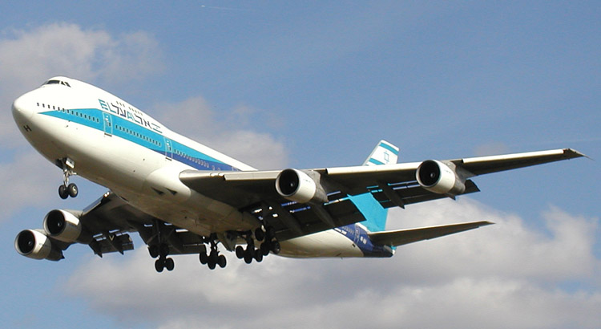

Repülők
Története

A repülőgép a levegőnél nehezebb olyan közlekedési eszköz, mely a légkörben halad, merev felületei és a levegő reakcióerejéből keletkező felhajtóerő segítségével a repülési magasság és irány megváltoztatására, illetve megtartására képes motor vagy hajtómű segítségével. A motor nélküli merev szárnyú repülőgépek (vitorlázó repülőgép) esetében a magasság megtartása vagy növelése csak emelkedő légáramlat (termik, vagy ún. lejtőszél) segítségével lehetséges, de az ilyen járművek ennek hiányában is képesek a kontrollált repülésre és jelentős távolság megtételére, relatíve csekély magasságvesztéssel (1:25 – 1:50 értékű siklószámmal), ezért szintén repülőgépeknek tekintjük őket.
A felhajtóerő keletkezéséhez szükséges sebességet a légcsavar vagy sugárhajtómű vonó-, illetve tolóereje, motor nélküli repülőgépeknél a gravitáció, vagyis a levegőhöz mint repülési közeghez viszonyított lejtőpálya biztosítja. Merev szárnyú repülőgépek esetében ez a jármű levegőben történő folyamatos haladásával szorosan összefügg. Ebből következően minden merev szárnyú repülőgépre megadható egy minimális biztonságos repülési sebesség, amely kizárólag a levegőhöz viszonyítva értendő.
Vannak olyan repülőgépek, amelyek a szükséges felhajtóerőt és kormányzást nem merev légelvezető szárnyak, hanem forgó felületek (forgószárny, rotor) segítségével állítják elő, ezeket gyűjtőnevükön forgószárnyas repülőgépeknek nevezzük. Ebben az esetben a felhajtóerőt nem a repülőgép (és szárnya) levegőhöz viszonyított sebessége, hanem a repülőgép körül forgó szárnyak levegőhöz viszonyított sebessége állítja elő. Ezért képesek a lebegésre, illetve a helyből fel- és leszállásra. Ezek a legbonyolultabb szerkezetű repülőgépek.Bővebben